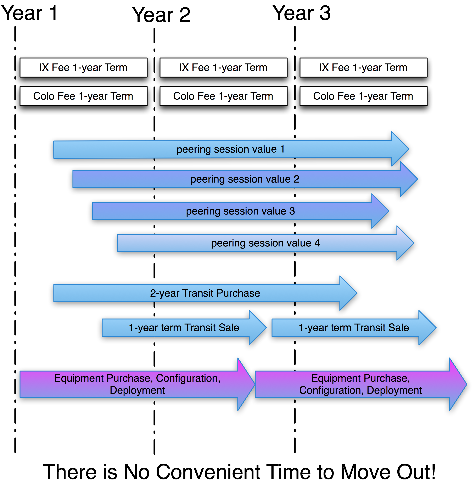

Tactic 11. Build and Maintain Population Stickiness
In the IXP sector, the peering population, the volume of traffic exchanged, and the IXP stickiness are key measures of success.
Definition: IXP Stickiness refers to the forces keeping a peer at the IXP.
Interconnections are the glue that makes it difficult for peers to leave an IXP. Essentially three forces are at play here: Value-Based Stickiness, Time-Skew-Based Stickiness, and Interdependence-Based Stickiness. After getting over the Startup Hump, building and maintaining population stickiness is the most important IXP activity. We will walk through each type of IXP stickiness in turn.
Value of the IXP = f(p, r, v, m) - c
p: The population
r: The routes available
v: The volume of traffic exchanged
m: The market perception of the IXP
c: The cost of participatioon at the IXP
Value-Based Stickiness
As described in the section “A Simple Calculation of the Financial Value of an IXP,” ISPs are deriving more value and therefore are less inclined to leave when the value of participation is greater than the cost of participation. The value could be proportional to the volume of traffic peered, the unique routes available, or the location relative to is customers. Value-Based-Stickiness refers to the desire for a peer to continue to derive the value at the IXP.
Time-Skew–Based Stickiness
When an ISP builds into an IXP, several contracts must be negotiated. Sometimes they can all start and terminate at the same times. Sometimes this scenario is impossible. There is no good time to leave when the service termination dates are disjoint, as shown in Figure 13-8.
If all contracts and peering relationships terminated on the same date, the peer would still experience the operational burden of picking up and moving operational gear elsewhere. Additionally, in the peering industry, ISPs always like to talk about growth, as that signals success. Conversely, ISPs generally don’t talk about pulling out of an IXP since that might be interpreted as lack of commitment to the region. Moving out of a colocation center is disruptive, and for this reason operational gear rarely gets disconnected.
The exception to this rule is for Large-Scale Network-Savvy Content Providers. These peers refresh their equipment every eighteen months as a matter of practice, and they merely deploy to a new site prior to decommissioning an old colocation deployment. Moving their servers is a common activity.

Figure 13-8. Time-Skew-Based Stickiness.
Interdependence-Based Stickiness
Perhaps the most important form of stickiness is interdependence-based stickiness. The more interconnections the IXP member has the more interdependence there is among the participants. This interdependence is the glue that keeps participants from leaving the IXP; to leave, they would need to turn off their interconnections and coordinate with the other parties to pick that traffic up elsewhere.
Here are several methods for increasing interdependence-based stickiness within an IXP population:
- Personal peering introductions have proven very effective at peering forums conferences, at operations meetings, and at any place where peering coordinators congregate. Not only do these introductions increase interconnections, they also increase the value of the IXP and increase information flow between the IXP operators and the ISPs.
- Conference call peering introductions. Second only to personal introductions, peering conference calls can help increase the confidence of new peering coordinators. After 4 or 5 peering introductions, peering coordinators can effectively go through the process themselves, leading to dozens of peering sessions.
- E-mail peering introductions have proven somewhat effective. Peering e-mail introductions raise the awareness of a new potential peer and provide an exchange of the relevant contact information for both parties.
- Informal socialization. Chris Quesada (formerly with Switch & Data) hosted “Peering Lunches” to facilitate the interaction among peering coordinators, both current and prospective. These lunches proved very successful and cost-effective. I have launched similar lunches and dinners at industry events and for local peering engineers with similar results.
The IXP and the peering population have aligned interests here. Both parties wish to see an interconnection mesh as broad as possible. The IXP wants stickiness to maximize revenue and reduce customer turnover. The ISPs want their peers to stay peers at the IXP, so ISPs want to see all peers derive great value from the IXPs where they participate.
Notes from the field.
Peering Introductions Appreciated
I have run dozens of peering forums and performed hundreds of peering introductions, face-to-face at conferences and via e-mail and phone calls. I have never had an unpleasant experience. Of the hundreds, maybe a couple were uncomfortable because I didn’t realize that the two parties were already in a customer-transit provider relationship, or that one of them was not receptive to any peering requests. The point is, almost all of the experiences were positive, many were successful, and all of them helped to build and maintain my relationships with the peering population.